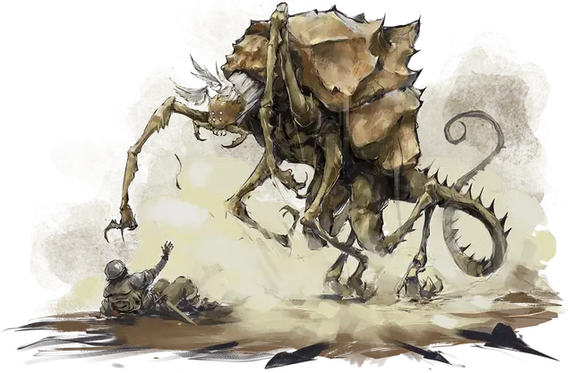

Гадж
Gaj
Большая Аберрация, обычно нейтрально-злая

Класс Доспеха 16 (природный доспех)
Хиты 75 (10к10 + 20)
Скорость 30 футов, лазая 30 футов
| мод | спас | ||
|---|---|---|---|
| СИЛ | 16 | +3 | +3 |
| ЛОВ | 10 | +0 | +0 |
| ТЕЛ | 15 | +2 | +2 |
| мод | спас | ||
|---|---|---|---|
| ИНТ | 12 | +1 | +1 |
| МДР | 15 | +2 | +2 |
| ХАР | 7 | −2 | −2 |
Навыки Восприятие +6, Скрытность +4
Чувства тёмное зрение 60 футов, пассивное Восприятие 16
Опасность 4 (1100 опыта)
Бонус мастерства +2
Особенности
Языки. Понимает все языки, но не может говорить.
Действия
Мультиатака. Гадж совершает одну атаку Жвалами и использует Антенну ментального зондирования или Паралич (если доступен).
Жвалы. . Рукопашная атака оружием: +5 к попаданию, досягаемость 5 фт., одно существо. Попадание: 10 (2к6 + 3) рубящего урона, и цель становится схваченной (Сл высвобождения 11). Пока цель схвачена, существо получает 10 (2к6 +3) рубящего урона в начале каждого хода гаджа. Пока гадж держит существо, он не может атаковать жвалами других.
Антенна ментального зондирования. Гадж выбирает в качестве цели одно схваченное им существо. Цель должна совершить спасбросок Мудрости Сл 12. При провале, существо получает 16 (3к10) урона психической энергией, и гадж магическим образом извлекает из сознания цели один фрагмент интересующей его информации. При успехе, цель получает половину этого урона, а гадж не узнает ничего интересного.
Паралич (перезарядка 6). Гадж магическим образом выбирает одно существо, которое он может видеть в пределах 60 футов. Цель должна преуспеть в спасброске Мудрости Сл 12, иначе станет парализованной на 1 минуту. Цель может повторять спасбросок в конце каждого своего хода, оканчивая эффект на себе при успехе.
Описание
Гаджи — отвратительные хищники, охотящиеся на другие разумные формы жизни. Они передвигаются на шести конечностях, похожих на конечности насекомых и атакуют своими жвалами. Гаджи устраивают засады на добычу, зарывшись под песок или ил в тёмных пещерах, или забравшись на природные каменные уступы, сливаясь с окружающей средой. У гаджей нет языка, но они обладают магической способностью понимать речь других существ.
Голова гаджа представляет собой упругий шар диаметром около 2 футов, с тремя тонкими усиками, торчащими из вершины. На голове расположены шесть фасеточных глаз, а над ртом нависают шесть пальцеобразных придатков. Гадж может попытаться прочитать мысли другого разумного существа, обернув эти антенны вокруг головы существа. Независимо от того, удачна ли эта попытка, это ментальное прощупывание болезненно и негативно сказывается на самочувствии жертвы.